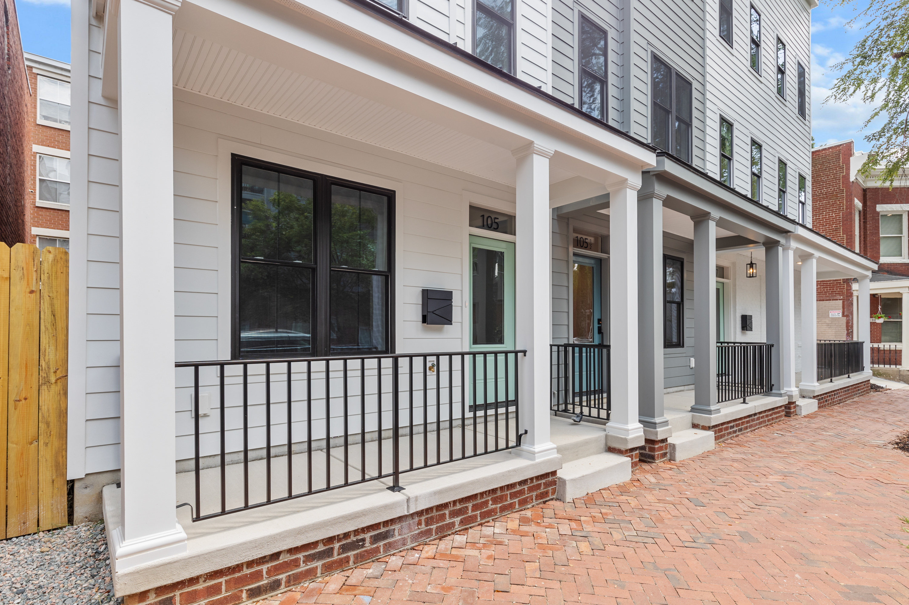
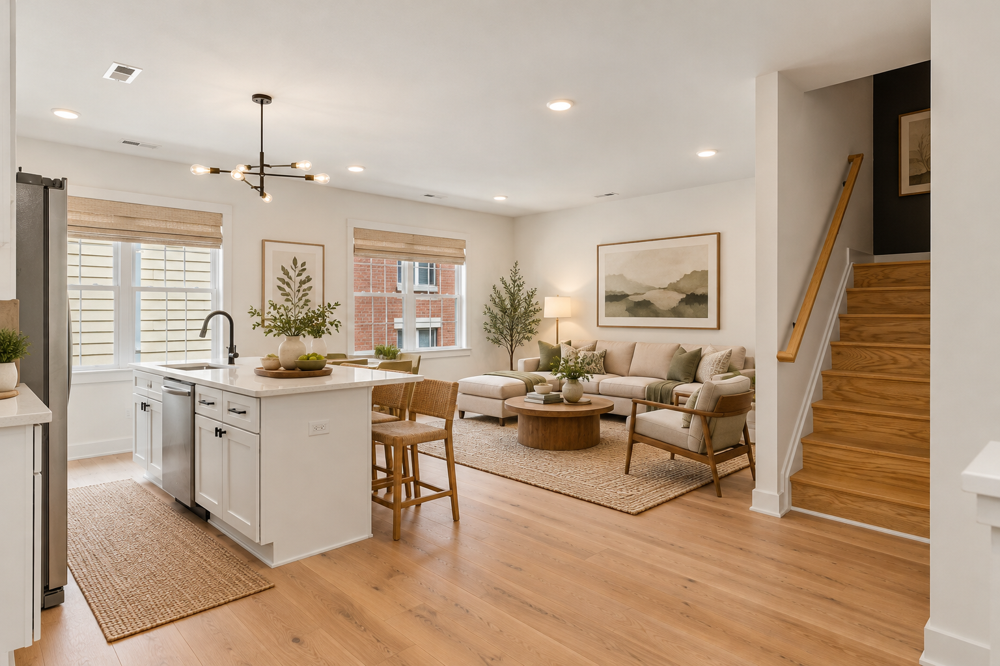
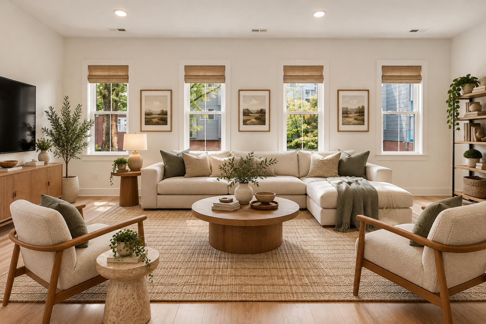
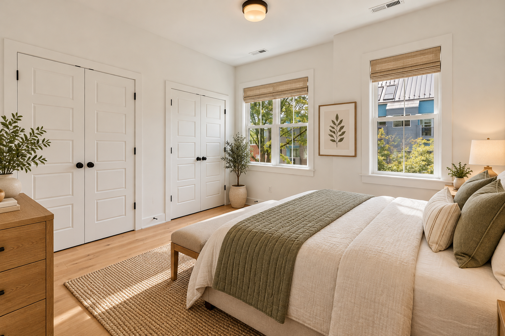
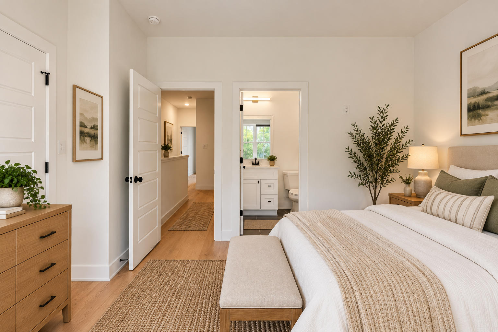
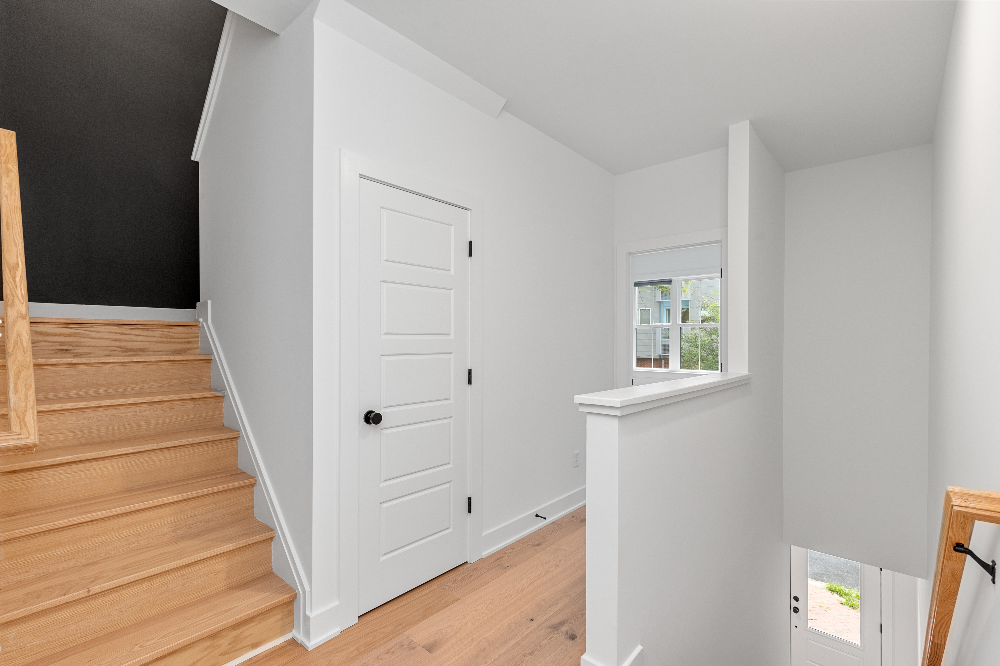
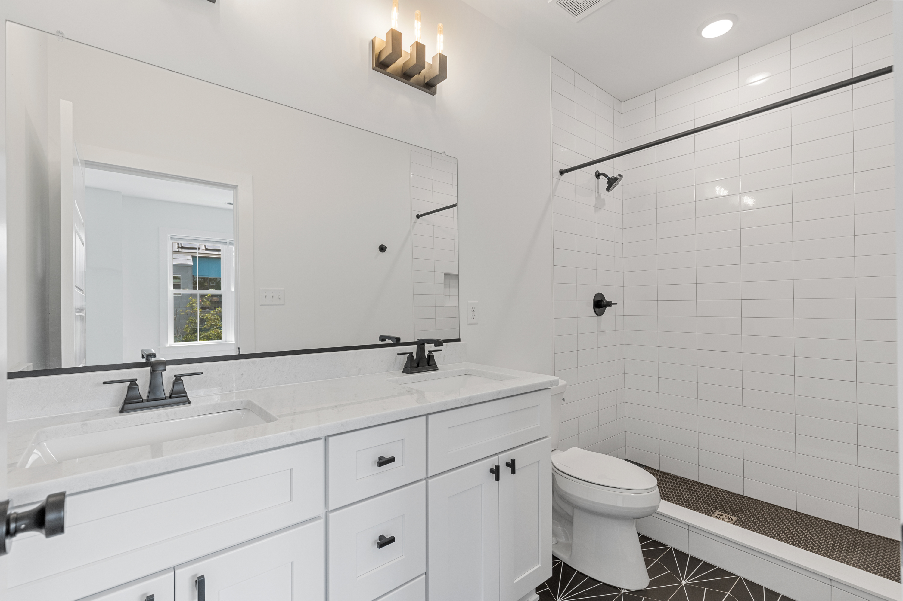

VCU · RICHMOND, VIRGINIA
Campus
Row.
Three city homes. Space to spread out. One block from VCU.
THE PROJECT
City connected.
Room to breathe.
Just one block from Virginia Commonwealth University and close to downtown Richmond, Campus Row brings together three single-family townhomes designed around light, space, and everyday flexibility.
Abundant windows, generous living areas, two distinct gathering spaces, covered porches, and parking make city living feel effortless.

LIGHT-FILLED LIVING
More windows.
More possibility.
Natural light fills spacious living areas designed for everything from quiet mornings to evenings with friends. Two separate living spaces in each townhome offer room to gather—and room to get away.
THOUGHTFUL DETAILS
Privacy where
it matters.
Every bedroom has its own bathroom, providing privacy and convenience. A powder room on the main living level makes entertaining easy, while a covered porch extends life outdoors.

EXPLORE THE PROJECT
A closer look
at Campus Row.





VCU · DOWNTOWN RICHMOND
At the center
of what's next.
Steps from VCU and close to downtown, Campus Row connects light-filled homes with the energy of Richmond city life.
START A CONVERSATION →